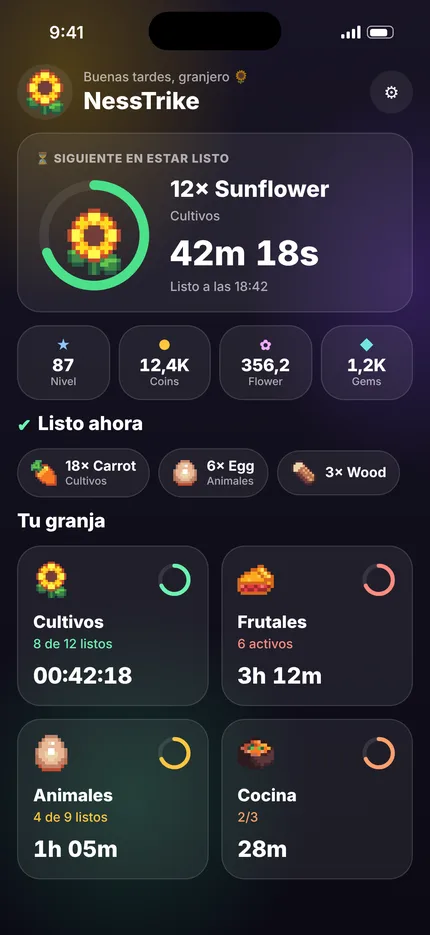
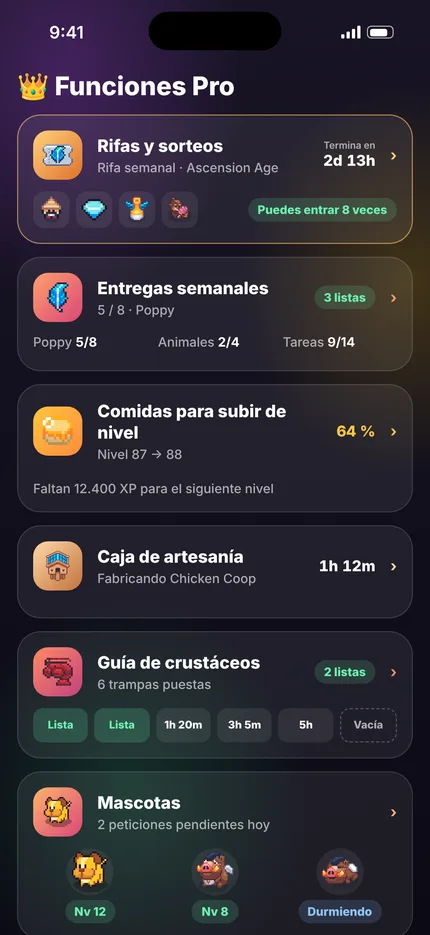
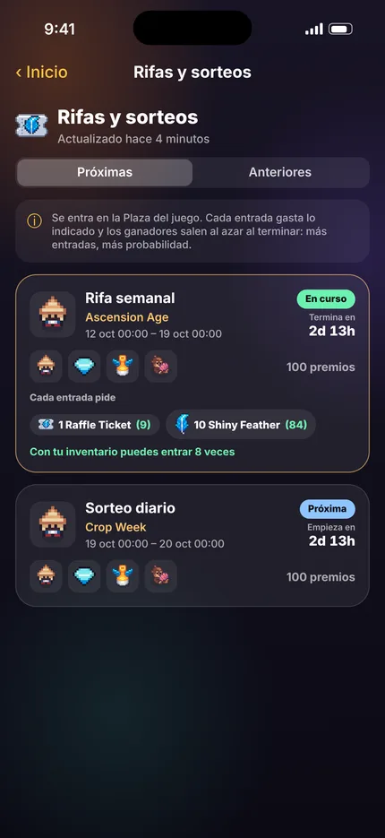
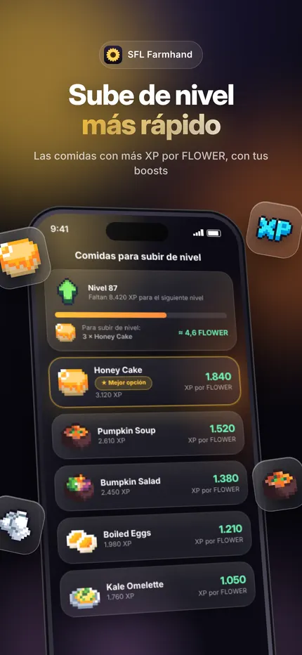
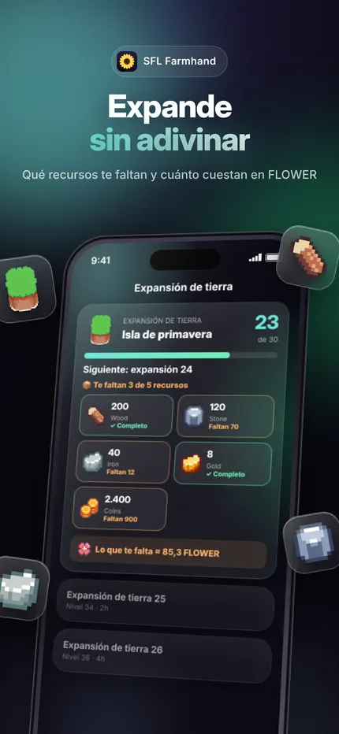
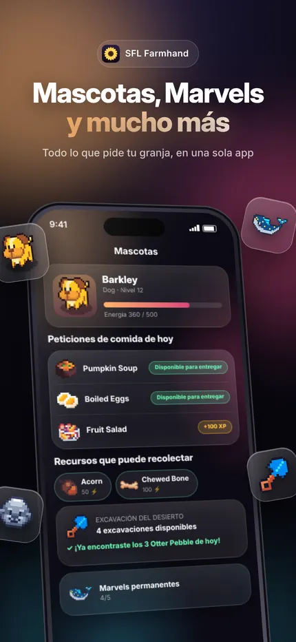

Tu granja, al segundo.
Escribe tu Farm ID y mira cuánto falta para cada cosecha, qué entrega te deja más FLOWER y hacia dónde va el mercado.
Lo que ves en la app






Gratis para empezar. Pro para ir más lejos.
Gratis
- Temporizadores de toda la granja y avisos
- Inventario con su valor en FLOWER
- NFTs, calculadora y calendario
- Pase de temporada
- Rentabilidad de entregas
- Expansión de tierra
SFL Farmhand Pro
1,99 USD cada 3 meses (7 días gratis la primera vez) o un pago único de 9,99 USD.
- Movimientos de tu granja
- Radar de mercado
- Progreso de Marvels
- Comidas para subir de nivel
- Rentabilidad de animales
- Mascotas y mascota de facción
- Excavaciones disponibles
Soporte
¿Dudas, errores o ideas? Escríbenos a nesstrikedev@gmail.com
¿Dónde encuentro mi Farm ID?
Es el número que aparece junto a tu nombre en el juego.
¿La app necesita mi cartera o contraseña?
No. Solo usa tu Farm ID público; nunca te pedirá claves privadas ni frases de recuperación.
¿Por qué un dato no coincide con el juego?
La app muestra lo último que el juego guardó en el servidor, y algunos valores son estimaciones. Desliza hacia abajo para actualizar.
¿Cómo cancelo la suscripción?
iPhone: Ajustes → tu nombre → Suscripciones. Android: Google Play → Perfil → Pagos y suscripciones. Cancela al menos 24 horas antes del final del periodo para que no se renueve.
¿Cómo pido un reembolso?
Los pagos los gestiona la tienda: en reportaproblem.apple.com (App Store) o en el historial de compras de Google Play.
Cambié de teléfono, ¿pierdo Pro?
No. Entra con la misma cuenta de Apple o Google y pulsa "Restaurar compras" en Ajustes → SFL Farmhand Pro.
¿Cómo borro mis datos?
En Ajustes → Legal y privacidad → "Borrar todos los datos de la app", o desinstalando la app. Tus compras no se pierden.